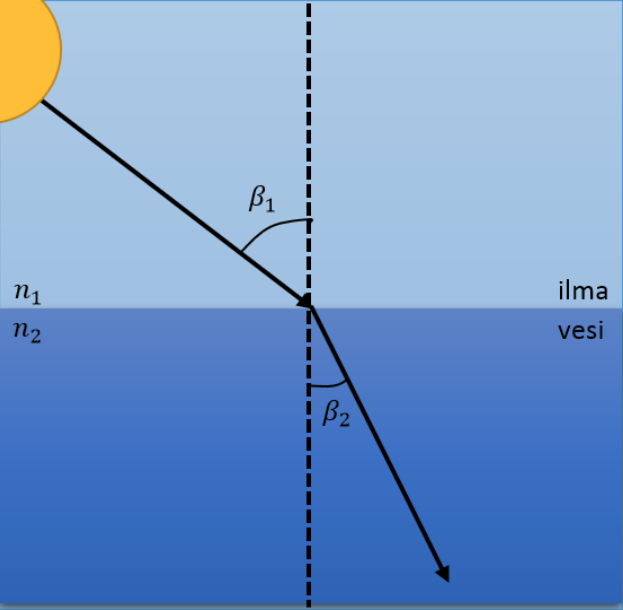
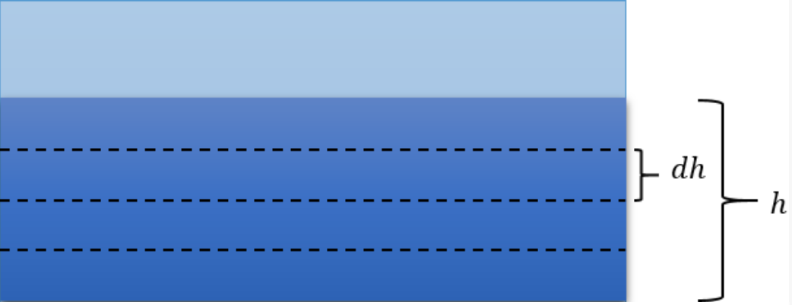
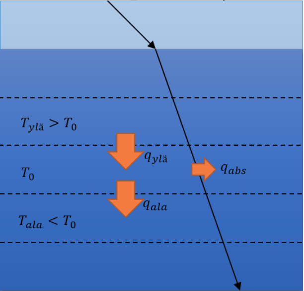

Lammen veden lämpeneminen
Contents
Lammen veden lämpeneminen¶
Tässä harjoituksessa tarkoituksena on mallintaa (samean) lammen veden lämpenemistä keväällä, lumen sulamisen jälkeen, kun päivän pituus on 10h, ja veden lämpötila pinnan läheisyydessä on vakio 10˚C. Ideana on tehdä fysikaalisesti uskottava malli, jossa ainoa huomiotta jätettävä ilmiö on konvektio. Lämpötilatarkastelu tehdään ajan lisäksi syvyyden funktiona (oletetaan lampi laajaksi eikä reunoja oteta huomioon). Tavoitteena on luoda malli, jonka tulokset noudattavat kohtuullisissa määrin omaa kokemustamme lampien veden lämpenemisestä keväisin, vaikka konvektio merkittävä ilmiö veden lämpötilan muuttumisessa onkin. Mallinnettava ongelma on myös käytännössä mielekäs, sillä lampien ja järvien lämpötiloilla on merkitystä esimerkiksi siinä, miten niissä eliölajit menestyvät, mikä on vaikkapa kalastamisen tai ekosysteemien tutkimuksen kannalta tärkeää.
Malli¶
Tarkastellaan veden lämpenemistä laajassa, tasasyvyisessä lammessa. Oletetaan myös, että Aurinko paistaa vuorokaudessa 10 tuntia ja tuona aikana auringonvalon kulma vedenpinnan kanssa vaihtelee välillä \(\left[\frac{\pi}{8},\frac{7\pi}{8}\right]\) tasaisesti. Auringonvalon sisältämä energia absorboituu veteen, jolloin vesi lämpiää. Vesi lämpiää enemmän pinnasta, jolloin syvemmälle jäänyt vesi on kylmempää kuin pintavesi ja lämpö alkaa siirtyä vesikerroksesta toiseen johtumalla. Todellisuudessa vesi myös sekoittuu, mikä vaikuttaa kerrosten lämpötiloihin merkittävästi, mutta mallin yksinkertaistamiseksi jätetään tämä konvektion vaikutus huomiotta. Tarkoitus on siis mallintaa lammen veden lämpötilaa veden syvyyden \(h\) ja ajan \(t\) funktiona.
Valon absorboituminen¶
Oletetaan auringonvalon tulevan tasoaaltoina veden pintaan. Pieni osa valosta heijastuu takaisin ilmaan ja suurempi osa taittuu kuten alla olevassa kuvassa ja jatkaa matkaansa veden alla, jolloin vesi absorboi valoa ja lämpenee. Tarkastellaan tätä kahdessa eri tilanteessa: ensimmäisessä veden sameus pysyy vakiona ja toisessa sameus muuttuu lineaarisesti syvemmälle mentäessä. Todellisuudessa veden taitekerroin ja absorbtiokerroin riippuvat molemmat veden sameudesta, mutta yksinkertaistuksen vuoksi oletetaan vain absorptiokertoimen muuttuvan sameuden muuttuessa, sillä taitekertoimen muuttuminen on hyvin pientä. Taitekerroin riippuu myös veden lämpötilasta, mutta sen vaikutus on tarkasteltavalla lämpötilavälillä myös niin pieni, että jätetään se huomiotta. Kun taitekerroin on sama jokaisessa kerroksessa, valonsäteen kulma muuttuu ainoastaan sen tullessa ilmasta veteen. Taittuneen valon kulma saadaan Snellin lain avulla (2):

Koska vesimassan lämpötila muuttuu vain syvyyssuunnassa, olemme kiinnostuneita vesikerrokseen tulevan valon intensiteetin z-suuntaisesta komponentista (leveys- ja pituussuuntien komponentit ovat merkityksettömiä, koska lammen oletetaan olevan todella leveä)
Lammen vesi ja vedessä olevat epäpuhtaudet absorboivat valoa, jolloin valon intensiteetti vaimenee syvemmälle mentäessä. Valon intensiteetin muutos syvyyden muuttuessa riippuu veden absorptiokertoimesta \(a\), joka voi itsessään olla veden syvyyden funktio. Nyt saadaan differentiaaliyhtälö
Yllä oleva yhtälö tunnetaan myös Beerin ja Lambertin lakina. Kun yhdistetään edellä mainitut kaavat saadaan z-suuntaiselle intensiteetille kaava valon tulokulman ja veden syvyyden funktiona
Kyseessä on siis läpäisevän valon intensiteetti, joten vesikerrokseen absorboituneen valon intensiteetti saadaan kerrokseen tulevan valon ja sen läpäisevän valon intensiteettien erotuksena:
Johtuminen¶
Koska konvektiota ei oteta huomioon, voidaan veden ajatella olevan ”hyytelöä” ja koostuvan alla olevan kuvan mukaisesti pienistä vesikerroksista, joiden paksuus on dh ja jotka eivät sekoitu keskenään. Kerrokset on jaettu syvyyssuuntaisesti, jolloin lämpötila pysyy vakiona vaakasuunnissa: valon absorptiossa tehty tasoaaltoapproksimaatio takaa sen, että lampi myös lämpenee auringon vaikutuksesta tasaisesti leveys- ja pituussuunnissa, kun reunojen lämmönjohtumista ei huomioida. Lämmönjohtumisessa siirtyvä lämpöenergian määrä voidaan laskea Fourier’n lain avulla:

Vierekkäiset vesikerrokset vaihtavat lämpöä suuremmasta lämpötilasta pienempään. Siirtyneen lämpöenergian aiheuttama lämpötilan muutos tarkasteltavassa vesikerroksessa voidaan laskea veden ominaislämpökapasiteetin avulla:
Huomioitavaa on, että \(dT_{kerros}\) tarkoittaa tarkasteltavan vesikerroksen lämpötilan muutosta, kun taas \(dT\) tarkoittaa naapurikerroksen ja tarkasteltavan kerroksen välistä lämpötilaeroa. Huomattavaa on myös, että pohja- ja pintakerroksilla tämä kerroin on eri, sillä pinnalla lämmönvaihtoa tapahtuu ilman kanssa, ja pohjassa pohjan kanssa. Järven pohjan lämpötila on oletettu vakio +4˚C:ksi, sillä vaikka konvektiota ei sinänsä huomioida, tiedetään järvien pohjien olevan aina tämän lämpöisiä, sillä sen lämpöinen vesi on raskainta. Järven pohjan voidaan myös olettaa olevan kivinen, jolloin se ei muutenkaan lämpenisi kovin nopeasti.
Veden lämpötila¶
Kun veden lämpötilaan vaikuttavat tekijät on huomioitu, voidaan johtaa kaava vesikerroksen lämpötilan laskemiseksi. Jaetaan tarkasteltava ajanjakso lyhyisiin, \(dt\):n mittaisiin hetkiin. Jokaisen lyhyen hetken jälkeen vesikerroksen lämpötila määräytyy kerroksen alkuperäisen lämpötilan, vierekkäisten kerroksien kanssa vaihdettavan lämmön sekä absorboituneen valon tuoman energian mukaan kuten alla olevassa kuvassa. Kerroksen lämpötila hetken \(dt\) kuluttua on siis:

Lopullinen malli muodostuu, kun iteroidaan \(dt\):n pituisia ajanjaksoja siten, että saadaan laskettua veden lämpötila syvyyden funktiona useiden vuorokausien ajalta.
Koodi¶
Simulaation koodi on kirjoitettu alla olevaan koodisoluun. Solun alussa olevia parametreja muuttamalla voidaan tarkastella eri tilanteita muuttamalla mm. tarkasteltavaa aika väliä, veden sameuskertoimia tai veden alkulämpötiloja.
# Import needed modules
import numpy as np
# Define initial parameters
t_end = 24*7 # how long simulation in time in h. HAVE TO BE 10h or n*24h
dt = 1 # time step in h
day = 10 # length of day in h (time that sun is up)
depth = 6 # depth of lake in m
dz = 0.1 # step of depth vector in m
T_air= 10 +273.15 # air temperature in K
T_bottom = 4 +273.15 # rock temperature in bottom of the lake in K
T_water_surface = 8 +273.15 # Initial water surface temperature in K
T_water_bottom = 4 +273.15 # Initial water bottom temperature in K
# Define constants
I0 = 665 # solar constant J/m^2/s
C_water = 4186 # heat capacity of water J/kg/K
a_water_top = 0.35 # extinction coefficient for water on the top
a_water_bottom = 0.35 # extinction coefficient for water on the bottom
k_water = 0.585 # thermal conductivity of water
k_air_water = 5*0.03 # thermal conductivity of air-water interface
k_water_rock = 0.6 # thermal conductivity of water_rock interface in the bottom of the lake
n_air=1 # refractive index of air
n_water=1.33 # refractive index of water
# Time vector and sun angle step
t = np.arange(0,t_end,dt)
d_angle = (7*np.pi/8-np.pi/8)/day*dt
# Define angle vector that has sun angle for each time step
if t_end>10:
n=int(t_end/24)
angle = np.tile(np.concatenate((np.arange(np.pi/8,7*np.pi/8,d_angle),np.zeros((int(14/dt))))),n)
else:
angle = np.arange(np.pi/8,7*np.pi/8,d_angle)
# Depth and water extinction vector
z = np.arange(0,depth,dz)
a_water = np.linspace(a_water_top,a_water_bottom,len(z))
# Mass of water of slice height dz with area 1m^2 in kg
mass = dz*1000
# Temperature matrix
T_matrix=np.zeros((len(z),len(t)))
# Initial condition for temperature distribution
T_matrix[:,0]=np.linspace(T_water_surface,T_water_bottom,len(z))
# Calculation of energy flows and new temperatures of different depth points in time.
# Temperatures are saved to T_matrix.
# Loop all time steps
for i in range(0,len(t)-1):
# Calculate light intensity that goes into water
I_in = I0*np.cos(np.arcsin((n_air*np.sin(np.pi/2-angle[i]))/n_water)) # z-component of light
if angle[i] != 0:
reflectance = 0.03
else:
reflectance = 1 # During night there is no energy from sun
I_in = (1-reflectance)*I_in # attenuation due reflection
# Loop all depth steps
for j in range(0,len(z)):
I_pass = I_in*np.exp(-a_water[j]*dz)
I_absorbed = I_in-I_pass # absorbed light
E_light = I_absorbed*dt*3600 # energy of light absorbed in dt to the area of 1m^2
# air-water surface
if j ==0:
Q_up = -k_air_water*(T_matrix[j][i]-T_air)*dt*3600/dz # heat from upper slice
Q_down = -k_water*(T_matrix[j][i]-T_matrix[j+1][i])*dt*3600/dz # heat to down slice
T_new = T_matrix[j][i]+(E_light+Q_up+Q_down)/(C_water*mass)
# water-lakebottom surface
elif j == len(z)-1:
Q_up = -k_water*(T_matrix[j][i]-T_matrix[j-1][i])*dt*3600/dz # heat from upper slice
Q_down = -k_water_rock*(T_matrix[j][i]-T_bottom)*dt*3600/dz # heat to down slice
T_new = T_matrix[j][i]+(E_light+Q_up+Q_down)/(C_water*mass)
# other layers
else:
Q_up = -k_water*(T_matrix[j][i]-T_matrix[j-1][i])*dt*3600/dz # heat from upper slice
Q_down = -k_water*(T_matrix[j][i]-T_matrix[j+1][i])*dt*3600/dz # heat to down slice
T_new = T_matrix[j][i]+(E_light+Q_up+Q_down)/(C_water*mass)
T_matrix[j][i+1]=T_new
I_in = I_pass # setting for new iteration
# Plot the results
import matplotlib.pyplot as plt
from mpl_toolkits.mplot3d import Axes3D
X,Y = np.meshgrid(t,z)
fig = plt.figure(figsize=(16,12))
ax = fig.add_subplot(111, projection='3d')
ax.plot_surface(X,Y,T_matrix-273.15)
ax.set_ylabel('Depth(m)')
ax.set_xlabel('Time(h)')
ax.set_zlabel('Temperature(Celcius)')
#ax.invert_yaxis() # CAUSES BUG
ax.invert_xaxis()
plt.show()